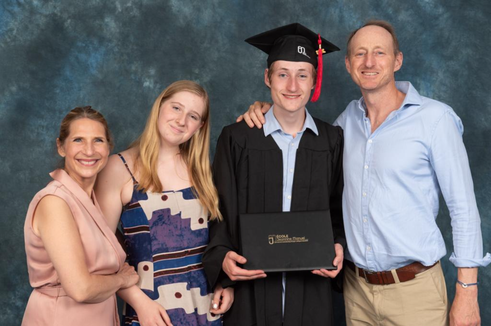
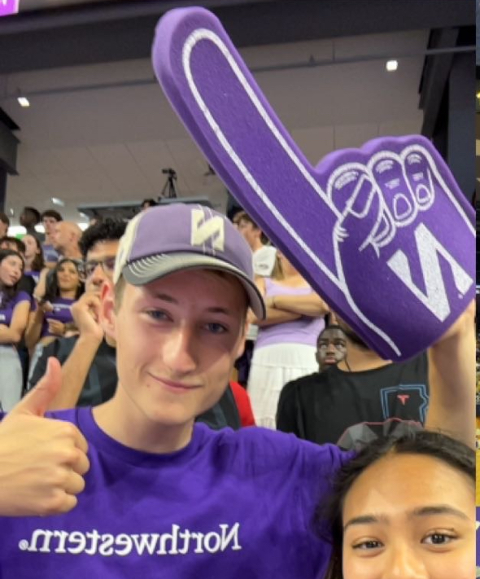
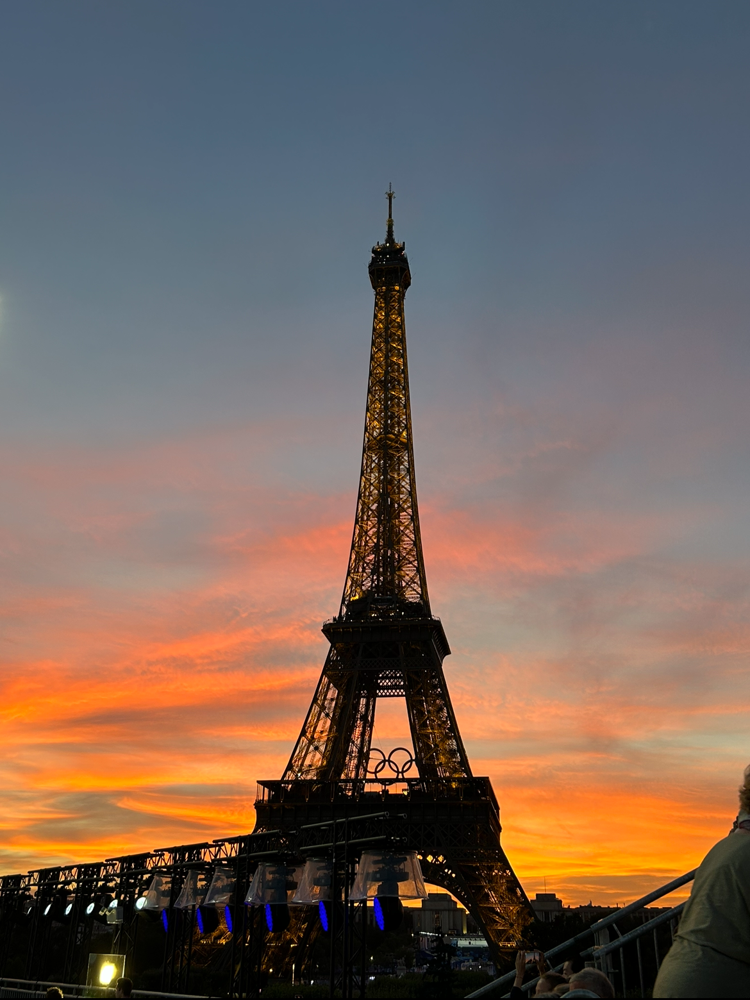
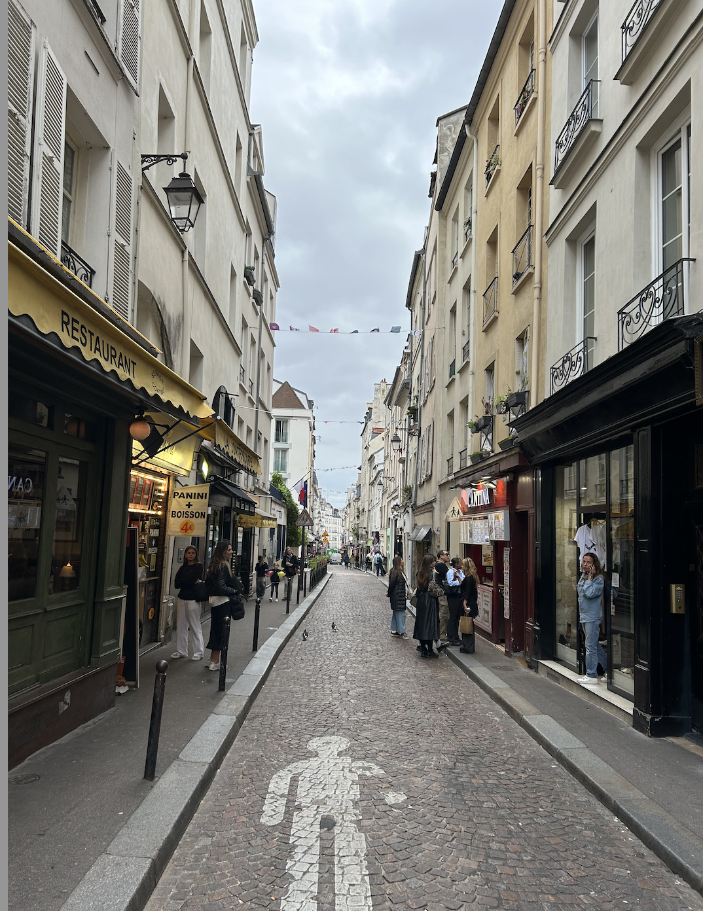
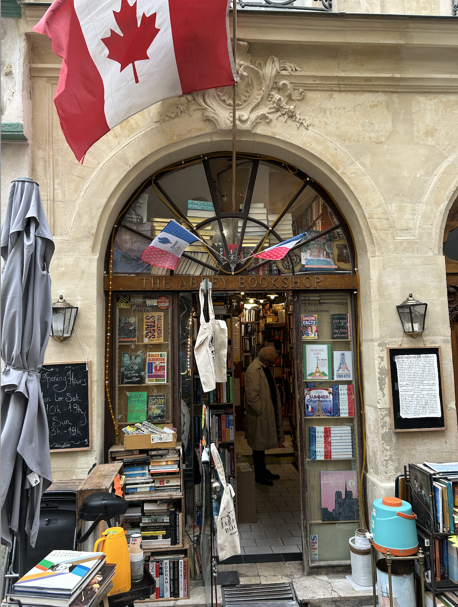
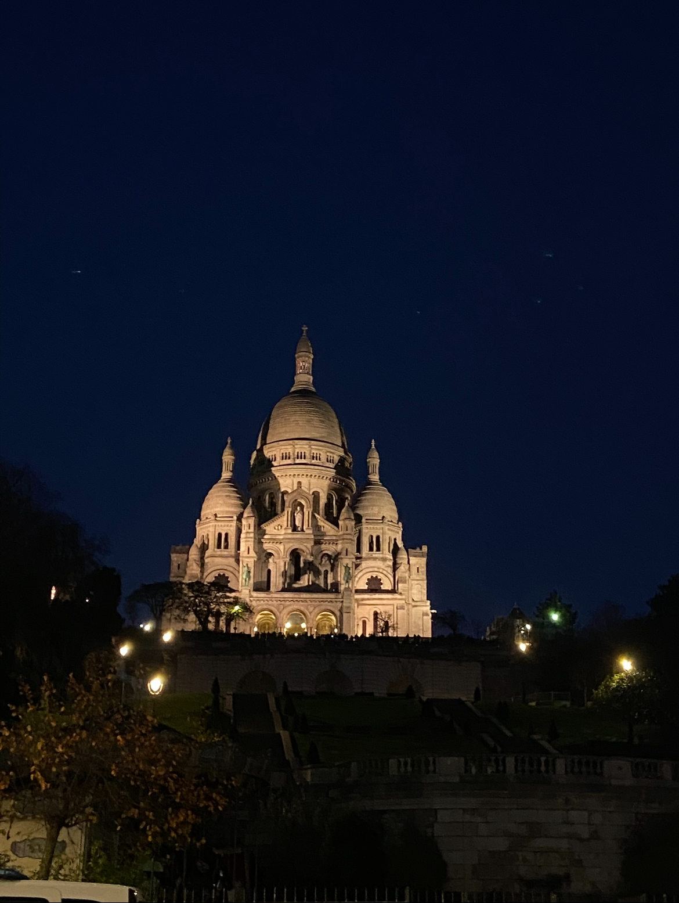

Paris is the most visited city in the world. You most likely have visited Paris at some point, perhaps staying for a few days or weeks. There is so much to do in this rich and vibrant city, that it is impossible to really grasp the Parisian experience in such a short time. If you really want to know Paris, consider living and working there. For those Americans who take that step, consider what happens to the children who are raised there. Last month, I interviewed Genie Godula, a Barrington native and Medill School of Journalism alum who lives and works in Paris as a bilingual TV journalist for France 24 TV. She and her British husband have raised their two children, including her son who is just starting his second year at Northwestern’s McCormick School of Engineering.
First, a few facts about the Chicago-Paris Connection. Paris is Chicago’s “Sister City”. The relationship goes back to 1996 after a visit to Chicago by former Paris mayor, then President of France, Jacques Chirac, who proposed to Chicago Mayor Richard M. Daley that Chicago and Paris enter into a sister cities agreement. A joint committee was formed, the Comité Paris-Chicago, which set an agenda that included city planning, increasing French participation in the Chicago Marathon, the Chicago Jazz festival, economic development, fashion, arts and culture. The relationship continues to this day.
It turns out, there are over 15,000 Americans living in Paris, and that doesn’t include “unregistered” persons like me, who stay less than 90 days per year or who don’t bother to register. Not every American living in Paris is actually working, but many do, which brings them even closer to the true Parisian experience: renting or buying a flat, getting health insurance, receiving necessary healthcare, working at a job, being paid, paying French taxes, opening a bank account, and interacting with Parisians every single day.

Northwestern University student Jonah Parrack is the epitome of a third culture kid, blending his Parisian upbringing with his family’s American and British roots. He and his younger sister were born and raised in Paris with their American mother and British father, James Parrack, a former Olympic swimmer and sports commentator who runs a swim training camp in Spain. In this interview, I talked with Jonah about his multicultural upbringing and what drew him to Chicago and his mother’s alma mater, Northwestern University, where he is studying mechanical engineering with the aim to pursue a career in the automotive industry.

Rob: Growing up in Paris with your family, you no doubt heard stories about your mother’s life in Chicago and visited family there. What was it about this city and Northwestern University that made you want to live and study here?
Jonah: I spent considerable time in the Midwest, but actually not very much in the city of Chicago. I had only been to Chicago proper twice, even though every summer we would all go to Kenosha, Wisconsin to visit my grandmother for a month. I only visited Northwestern once when touring campuses with my mom, but immediately loved it and thought it was beautiful, especially the lake. I was looking for a blend of an urban campus and a “real” campus, and Northwestern offered that perfect mix. Being near Chicago and having that traditional campus feel really drew me in.

Rob: You’re a Parisian by birth, but you’re also a British and American citizen. Tell me about your multicultural upbringing and growing up in Paris.
Jonah: I grew up in the 15th arrondissement which is a neighborhood in Paris. It’s a very residential area which has a great shopping street, rue du Commerce, and some fantastic parks. My friends and I would often have picnics near the Eiffel Tower. I went to a bilingual private school called École Jeannine Manuel. The school is a three-minute walk from my family’s apartment, which was super convenient. My academic program was called the French Option International Baccalaureate, which is different from the traditional International Baccalaureate or IB, because it’s basically the French Baccalaureate with an extra international section tagged along. I loved it because they had more of an American approach to the education system. It was not the traditional French approach with lots of work and very little exchange and dialogue with the professors. I absolutely loved my school!
Rob: In a previous interview, I spoke with your mother, Genie Godula, about successfully building her career as an American in Paris. Do you see any parallels in your own journey of establishing yourself as a Parisian in America?

Jonah: I think my route is much easier than hers. She moved to Paris spontaneously, knowing only one person and barely speaking French. On the other hand, I have my extended family nearby in Chicago and Wisconsin, including my grandmother and other relatives who take me out for lunch on weekends. I’ve had a support system from the start, so it’s been easier for me. But yes, there are parallels in terms of adjusting to a new culture and figuring things out, but it is easier for me because of the support system and being fluent in English.
Rob: Tell us a bit about your dad and the UK influence on your life, other than your British accent!
Jonah: My dad was an Olympic swimmer and now runs the BEST Swim Centre in Mallorca, Spain where teams come to train. I didn’t spend as much time in the UK growing up as I did in the US, but I love my family there. They’ve been a great source of advice, especially since many of my cousins have already gone through the university system there.
Rob: Did you think at all about going to university in Paris or the UK?
Jonah: Paris, not so much, but I did apply to universities in the UK. I will say the UK application process is far more straightforward than the American one. Basically, you just pick your five schools, write one essay for all of them, send it off, and then they automatically do everything. Whereas the American ones, you must write supplemental essays. These supplemental essays are really important because they allow the schools to get to know you. Also, in the UK, you have to declare your specific area of study very early, as opposed to Northwestern, where you just declare yourself as an engineer in general and only later do you specialize. At the beginning, I wasn’t sure about what branch of engineering to study. That’s another thing that drew me to America. At Northwestern, I was able to take some enjoyable non-engineering classes, such as psychology, another one of my interests, originally thinking to minor in psychology. In the end, however, this didn’t interest me enough to pursue it as a minor, but it was a really enjoyable class. I also took a creative writing class, which was great! This ability to explore other subjects really drew me to schools in America as opposed to going to the UK, where we would just be studying engineering, engineering, engineering. I considered going to school in France, but by the time I was ready to send off my applications, I’d already been accepted into Northwestern and gotten all my answers from the other American schools. My French high school told us, “If you don’t plan on going to school in France, don’t apply because you’re taking seats from other students who might want to study there.”
Rob: Are there big differences between the academic systems in Paris and the US that you’ve noticed in particular?
Jonah: Yes, one big difference in the US is how hands-on it is. For example, in my first year, I took a class on circuits where we physically built and coded circuits, whereas my friends studying in France are doing more theoretical work – mostly advanced math and physics. I even worked on a real-world project at the Shirley Ryan Ability Lab in Chicago, designing a better way for paraplegic patients to move from wheelchairs to shower seats. That practical experience is something I really appreciate here.
Rob: What do you notice that’s different from the preparation you got in France compared to your fellow students in the United States who did their pre-college training in the United States?
Jonah: I built better study habits in Paris. A lot of my American friends, when they came to college, thought, “Yeah, I did well in high school without having to work too much, so I can just keep up that rhythm.” But that wasn’t the case at all, especially in engineering. Unless you are a genius, you can’t just go to class and then work it out when you get the test. I learned good study habits in Paris and am very grateful for that. Another difference is my American friends feel very connected to their high schools. In France, any extracurricular activities such as sports, are not affiliated with the schools, but rather other independent athletic organizations. There is no school team or going to watch your school’s team play a match. This could explain why Americans are more attached to their high schools and have a lot of school spirit, whereas I loved my school but wasn’t as connected to it after leaving. I just went there to study and be with my friends.
Rob: You’ve been in the United States for a little over a year, what elements of Parisian culture do you find yourself missing while you’re here? And have you been able to share some of your culture with your friends at Northwestern?
Jonah: One thing that I miss the most is just sitting in a cafe on a street corner and sipping a coffee, chatting with my friends and people-watching. That culture doesn’t exist as much in America as it does in Europe, especially Paris. That’s something I miss but have been trying to bring it back. I now have a friend with whom I meet every Friday at Colectivo, a coffee shop in Evanston. We get a coffee and just chat for an hour and hang out. I’m really glad to bring that tradition back as it’s really important for my work-life balance.

Rob: Tell me about your new friends that you’ve met at Northwestern. Northwestern is an international school with people from all over the world. What kind of Northwestern students do you gravitate towards?
Jonah: I gravitate very heavily towards other international students. The main reason for this is that I came early to Northwestern for International Student Orientation a week before all the other freshmen came to campus. The internationals like to stick together because they’re all “different”. We’re all in a new country and we’re all experiencing new things together, which makes us come together. I do have some American friends too, but these are mostly in engineering.
Rob: What have you discovered about Chicago and the culture here that you love?
Jonah: The friendliness! I remember walking down Tech Drive (on Northwestern’s campus) and having several people smile at me. In Paris, people rarely do that. The Midwestern friendliness has been a great surprise and I love it.
Rob: You’re a mechanical engineering student and involved in the Northwestern Formula SAE Racing Team. Where did your love for motorsports and the automotive industry come from?
Jonah: It started with Legos, which I know is a cliché for engineers! I loved building complex sets with mechanical aspects. Planes fascinated me too—I would always sit by the wing and watch how it moved. Formula One is what truly got me into automotive engineering. I love watching the races and seeing how teams develop their cars.
Rob: Does your global upbringing help you as you pursue internships and opportunities in the automotive industry?
Jonah: Not yet. I’m still looking for an internship for the summer of 2025, but I do think my international background will help me connect with people in the future. Last summer, I worked as an engineering camp counselor at Yale, which was great for connecting with other international students.
Rob: Looking ahead, what are your aspirations within the automotive industry?
Jonah: Working in Formula One is my dream, however any form of racing would be great like endurance racing, NASCAR, or even something completely different, like MotoGP. Honestly, doing anything with cars or airplanes would be really amazing. Or maybe not, who knows? That’s the beauty of engineering. I’m open to where the opportunities take me.
Rob: If your new friends from Northwestern were visiting Paris for a week, what would you tell them to do?
Jonah: Cycle around the city. There’s nothing like exploring Paris on a bike. While you’re riding around, make sure to visit Shakespeare & Co. an English-language book store founded in 1919 by American Sylvia Beach in the 5th arrondissement. Then walk a few blocks over to The Abbey Bookshop, which is really lovely and has a charming café next door. You will find great little bookstores on almost every corner in Paris. After the bookstore visits, get back on your bike and take a good ride through some fun neighborhoods like the Marais and Montmartre. Go to the world’s first department store, the Bon Marché and La Grande Epicerie, the gourmet food shop next door, in the 7th arrondissement, one of my favorite shopping districts. Also, the museums in Paris are phenomenal—some are even free, as are the parks like the Tuileries and Luxembourg, which are great places to enjoy a coffee or play chess at one of the tables in the park. And of course, just sitting in a café enjoying the atmosphere is a must.

Rob: Although the food scene in Chicago is great, there are some food differences. It must have been quite a shock coming into American cuisine.
Jonah: One thing I discovered about Chicago is that on top of the amazing pizza and Italian beef, there are really incredible steak restaurants. I went to Chicago Cut downtown and had the best steak of my entire life. Also, there is such a diverse food scene here including great Thai food and Turkish cuisine. The one thing I haven’t found yet in Chicago is a good traditional French bistro like we have in Paris. I miss the frog legs, snails, confit de canard, boeuf bourguignon and all the quintessentially French foods that you can’t find elsewhere.

Rob: Where do you see yourself in five or ten years? Do you think you’ll end up back in Europe?
Jonah: The world is my oyster with my three passports, so I’m open to wherever opportunities take me. But yes, long term, I’d like to live in Europe and raise a family there. Really long term, I would love to live in the south of France, but Brittany is great too.
Rob: Thanks, Jonah. You’re doing amazing things, and I look forward to catching up with you soon. Best of luck with your studies!
Jonah: Thank you. It was a pleasure.
Dr. Rob Murphy is Professor and Executive Director of the Havey Institute for Global Health at Northwestern University; he is a physician at Northwestern Medicine. You may have seen him on WGN-TV morning news in recent years, where he gave daily updates on Covid-19 during the height of the pandemic. While he calls Chicago home, Rob also spends time in Paris, where he has lived on and off for the past 20 years including full time as visiting professor at the Pierre et Marie Curie University. He has met many other Chicagoans who are living and working in the city. In this series of interviews, “The Chicago-Paris Connection”, Rob will introduce us to some of these Chicagoans who are embracing a new culture and lifestyle in the City of Lights.
Photos courtesy of Jonah and the Parrack family